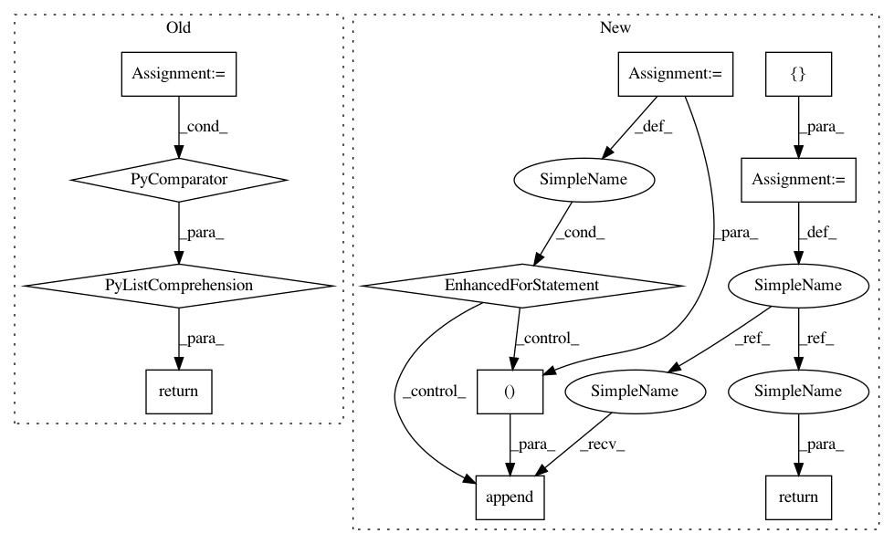

5d9530841b74021004a09db550e2f791d0a1cb9e,snntoolbox/core/util.py,,get_activations_batch,#Any#Any#,215
Before Change
return [(layer["get_activ"](X_batch), layer["label"]) for layer
in ann.layers if "get_activ" in layer]
def wilson_score(p, n):
After Change
``label`` is a string specifying the layer type, e.g. ``"Dense"``.
activations_batch = []
// Loop through all layers, looking for activation layers
for idx in range(len(ann.layers)):
if "get_activ" not in ann.layers[idx].keys():
continue
i = idx if "Pooling" in ann.layers[idx]["label"] else idx-1
activations_batch.append((ann.layers[idx]["get_activ"](X_batch),
ann.layers[i]["label"]))
return activations_batch
// return [(layer["get_activ"](X_batch), layer["label"]) for layer
// in ann.layers if "get_activ" in layer]
In pattern: SUPERPATTERN
Frequency: 3
Non-data size: 11
Instances
Project Name: NeuromorphicProcessorProject/snn_toolbox
Commit Name: 5d9530841b74021004a09db550e2f791d0a1cb9e
Time: 2016-08-27
Author: duguyue100@gmail.com
File Name: snntoolbox/core/util.py
Class Name:
Method Name: get_activations_batch
Project Name: dpressel/mead-baseline
Commit Name: 8a420e8ef11ebf828e5e5b33e8a830eb74c39d6a
Time: 2020-03-09
Author: blester125@gmail.com
File Name: baseline/services.py
Class Name: ClassifierService
Method Name: predict
Project Name: home-assistant/home-assistant
Commit Name: 45dd8cbc3f6344168a866bf5482ae19f6dc68aa1
Time: 2015-02-05
Author: paulus@paulusschoutsen.nl
File Name: homeassistant/components/history.py
Class Name:
Method Name: state_changes_during_period